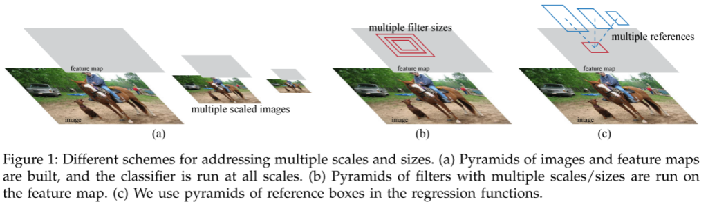
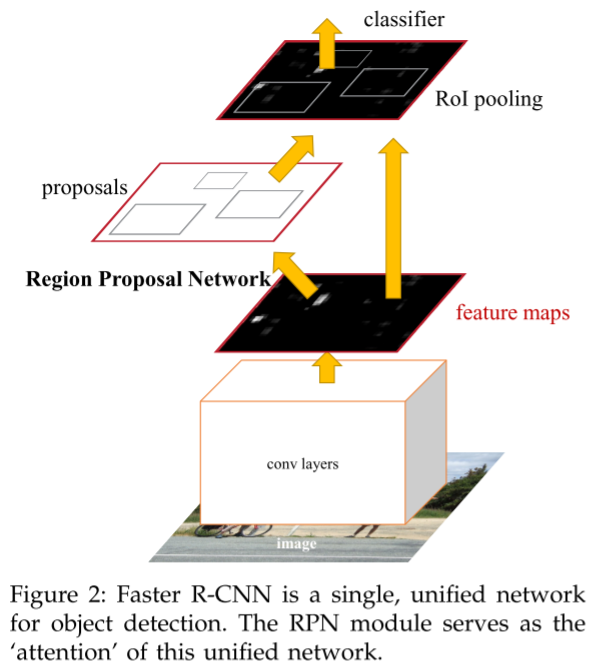

Faster R-CNN——RCNN系列算法Ⅲ
前言
Faster R-CNN可以算是深度学习目标检测领域的祖师爷了，至今许多算法都是在其基础上进行延伸和改进的，它的出现，可谓是开启了目标检测的新篇章。【深度学习】详解Faster-R-CNN_风度78的博客-CSDN博客
论文与源码
原论文：1506.01497.pdf (arxiv.org)
代码链接：jwyang/faster-rcnn.pytorch: A faster pytorch implementation of faster r-cnn (github.com)
摘要

论文开篇提到最先进的目标检测网络依赖于区域建议算法来假设目标位置。前人的工作，诸如SPPnet和Fast R-CNN的加速工作都在“检测网络”上，“区域候选”的计算则成了性能瓶颈。
Faster R-CNN论文提出了能够与检测网络分享全图卷积特征的RPN（Region Proposal Network，区域候选网络），能够几乎零成本地实现区域候选。RPN是一个全卷积网络，它同时预测每个位置的对象边界和得分。
RPN被端到端地训练以生成高质量的区域建议，该区域建议被Fast R-CNN用于检测。然后论文将RPN和Fast R-CNN进行合并成一个网络，并引入了“注意力”机制。
最后提到了使用VGG-16模型，检测系统在GPU上的帧速率为5fps。
结论
论文提出RPN，用于高效和准确地生成区域建议，通过共享卷积具有下游检测网络的特征，区域建议步骤几乎是无成本的。该方法使基于深度学习的统一对象检测系统能够以接近实时的帧速率运行。所学习的RPN还提高了区域建议质量，从而提高了总体对象检测精度。
介绍
当时目标检测的最近进展是由区域提议方法和基于区域的卷积神经网络所驱动的。基于区域的卷积神经网络十分耗时，Fast R-CNN如果能够忽略区域建议的时间，就实现接近实时检测。因此，区域提议就是先前工作存在的瓶颈。
区域提议方法通常依赖于廉价的特征和经济的推理方法，其中一个最流行的方法就是选择性搜索(Selective Search)算法，它基于工程化的低级特征贪婪地合并超像素。与高效的Fast R-CNN相比，SS算法慢了两个数量级，在CPU上2张图/秒。区域提议步骤消耗过多的运行时间。
文章使用CNN计算提议，产生了一个优雅而有效的解决方案，其在给定检测网络计算的情况下几乎是零成本的。RPN与Fast R-CNN等共享卷积，计算建议的边际成本很小（如每张图10ms）。
基于区域的检测器使用的卷积特征映射，如Fast R-CNN，也可以用于生成区域建议。在这些卷积特征之上，我们通过添加一些额外的卷积层来构建RPN，这些卷积层同时回归规则网格上每个位置的区域边界和客观性得分。因此，RPN是一种全卷积网络（FCN），并且可以针对用于生成检测建议的任务进行端到端训练。

RPN被设计为有效地预测具有广泛比例和纵横比的区域方案。引入了一种新颖的“锚”框，其用作多个尺度和纵横比下的参考。方案可以看作是回归参考的金字塔，它避免了枚举多个尺度或纵横比的图像或滤波器。该模型在单尺度图像训练和测试中表现良好，有利于提高运行速度。
为了将RPNS与Fast R-CNN结合起来，提出了一种在保持目标检测建议不变的情况下，在区域建议任务的微调和目标检测的微调之间交替的训练方案。 该方案收敛速度快，并生成一个统一的具有卷积特征的网络，该网络在两个任务之间共享。
该方法几乎免除了测试时选择性搜索的所有计算负担—提议有效运行时间仅为10毫秒。使用VGG，在GPU上仍然具有5fps的帧率（包括所有步骤），因此无论从速度还是精度来看都是一个实用的目标检测系统。
RPN完全学会从数据中提出区域，因此可以很容易地受益于更深入和更有表现力的特征。结果表明，该方法不仅是一种经济有效的解决方案，而且是提高目标检测精度的有效途径。
相关工作
目标提议
广泛使用的对象建议方法包括基于超像素分组的方法（如选择性搜索、CPMC、MCG)和基于滑动窗口的方法。
用于目标检测的深度网络
R-CNN方法对CNN进行端到端的训练，将建议区域分类为对象类别或背景。 R-CNN主要起到分类器的作用，它不预测对象边界（除了通过包围盒回归进行细化），其准确性取决于区域提议模块的性能。
Overfeat的论文从图像金字塔中计算卷积特征，用于分类、定位和检测。 基于共享卷积特征映射的自适应大小池(SPP)被开发用于有效的基于区域的目标检测，和语义分割。 Fast R-CNN支持基于共享卷积特征的端到端检测器训练，并显示出令人信服的精度和速度。
Faster R-CNN
Faster R-CNN系统是一个单一的、统一的目标检测网络，它由两个模块组成：
- 提出区域的深度全卷积网络
- 使用提出建议的Fast R-CNN检测器
Fast R-CNN结构
使用最近流行的具有“注意力”机制的神经网络术语，RPN模块告诉Fast R-CNN模块该去哪里寻找。
Region Proposal Network (RPN)
RPN以任意大小图像作为输入，输出一组矩阵目标提议，这些每个建议都有一个分数。我们使用一个全卷积网络来建模这个过程。最终目的是与一个Fast R-CNN共享计算。
为了生成区域建议，在最后一个共享卷积层输出的卷积特征图上滑动一个网络。这个小网络以输入卷积特征映射的$n×n$窗口作为输入，每个滑动窗口被映射到一个较低维度的特征。这个特征被提供给两个兄弟的FC层，一个是盒子的回归层（reg），一个是盒子分类层（cls）。
锚（Anchors）
在每个滑动窗口位置，同时预测多个区域建议，其中每个位置的最大建议数为$k$，回归层reg有$4k$个输出，编码$k$个盒子坐标，分类层输出$2k$个分数，估计每个提议对象或非对象的概率。$k$个建议是相对于$k$个参考框参数化的，称为锚（anchors）。锚位于讨论的滑动窗口中心，并于比例和横纵比相关联。默认情况下使用3个尺度和3个横纵比，在每个滑动位置产生$k=9$个锚。对于尺寸为$W×H$的卷积特征总共有$WHk$个锚。
平移不变锚（Translation-Invariant Anchors）
本方法中一个重要特性是平移不变性，无论是在锚点方面还是在计算相对于锚点的提议函数方面。这一特性体现在：如果平移图像中的对象，则提议也相应地平移，并且相同的函数能够预测任一位置的提议。使用了MultiBox方法进行比较，它是使用k-means方法生成800个锚点，这些锚点不是平移不变的，因此不能保证在转换对象时生成相同的建议。
另外，平移不变性也减小了模型的大小。MultiBox方法有$(4+1)×800$维的FC输出层，而在$k=9$个锚点的情况下，本方法只有$(4+2)×9$维的FC输出层。使用vgg-16时，相比之下本方法比MultiBox的输出层少两个数量级。本方法在小数据集上过拟合的风险更小。
作为回归参考的多尺度锚点（Multi-Scale Anchors as Regression References）
锚点设计为解决多尺寸和横纵比问题提供了一种新方案，有两种流行的多尺度预测方法。
- 基于图像/特征金字塔。在多个尺度上调整图像大小，并计算每个尺度的特征图（HOG或深卷积特征）。通常很有用但很耗时。
- 在特征图上使用多个比例的滑动窗口。这种方法用于处理多个尺度，可将其视为“滤波器金字塔”。方法2通常与方法1结合使用。
作为比较，基于锚的方法是建立在锚的金字塔上，这是更有成本效益的。方法分类和回归包围盒参考锚盒的多个尺度和纵横比。它只依赖于单一比例的图像和特征地图，并使用单一大小的过滤器（特征地图上的滑动窗口）。论文通过实验展示了该方案在处理多尺度和大小的效果。
多尺度和大小的效果
由于这种基于锚点的多尺度设计，我们可以简单地使用在单尺度图像上计算的卷积特征。多尺度锚点的设计是共享特征而不需要额外成本来解决尺度问题的关键组成部分。
损失函数（Loss Function）
训练RPN为每个锚点分配一个二元标签。其中这两种锚点被贴上正标签：① 具有最高IoU的锚与真实框重叠；② 具有高于0.7的IoU的锚与任一真实框重叠。需要注意的是，单个真实框可以为多个锚点分配正标签。通常第二种条件足以确定正样本，但由于某些罕见情况下，可能第二种条件找不到正样本，因此仍采用第一种条件。
将非正锚点IoU比真实框低于0.3的样本指定为负标签。而非正非负的对训练目标没有贡献。
将损失函数定义为：
其中$i$是在一个小批量中一个锚点的索引，$p_i$是锚点$i$作为对象的预测值。如果锚点为正，则标签$p_i^$为1，否则为0。$t_i$是表示预测边界框的4个参数化坐标的向量，$t_i^$是与正锚点相关联的真实框的坐标。
训练RPN
RPN可以通过反向传播和随机梯度下降（SGD）进行端到端训练。我们在一张图像中随机抽取256个锚点来计算一个小批次的损失函数，其中抽样的正锚点和负锚点的比例达到1：1。如果图像中的正样本少于128个，我们会用负样本填充小批次。
所有新的层从一个零均值高斯分布与标准偏差0.01的权重进行随机初始化。使用0.9的动量和0.0005的权值衰减。
RPN 与 Fast R-CNN共享特征
独立训练的RPN和快速R-CNN将以不同的方式修改它们的卷积层。因此，需要开发一种技术，允许在两个网络之间共享卷积层，而不是学习两个单独的网络。讨论了三种训练具有共享特征的网络的方法。